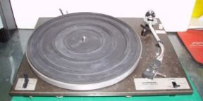
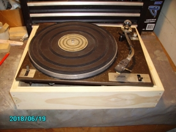
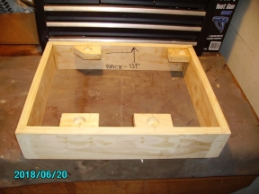
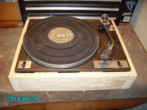

|
NAVIGATION
TOP of Page
MAIN Page
HOME Page
TURNTABLE
About Restoration
Processes Involved
|
About Restoration
|
|
|

|
The Pioneer PL10 turntable as purchased
Some months ago I bought a Pioneer PL10 manual belt drive turntable on eBay for the
princely sum of $5.00. I drove over to the Eastern Suburbs to pick it up from a deceased estate.
It was missing the wooden base, the stylus and the drive belt. All the electrical connections
had been snipped off.
|
Processes Involved
|
|
|

|
Repairing and Replacing the Missing Parts
On eBay I purchased a couple of drive belts and an
Audio Technica stylus to match the cartridge. The
platter was extremely hard to rotate, until I
disassembled the support shaft and cleaned out the
solidified lubricant, which I replaced. The power and
output leads were terminated in appropriate sockets,
connected up and tested by playing an LP. It all seems
to work at the right speed.
|
|

|
Building the Frame
A frame was built from 19mm Pine timber. Ensure
there is a 5mm gap around the edge of the platter to
accomodate horizontal movement. It has come up
beautifully. I have added supports for the platter
springing mechanism and staining the outside and top -
I don't think it will need veneer. A cutout will need to
be made in the back panel to output the leads with their
sockets mounted on a small aluminium bracket.
|
|

|
Finishing Off
The top of the platter was a bit grubby, with small
amounts of oxidisation on the crackle finish surface. A
hard rub down with an oiled rag cleaned this up to an
extent. An interesting find in the workshop was a spare
perspex cover which seems to just fit. It pays to store
things, rather than immediately throw out unused stuff.
Times as this have proven the benefit and will enable
me to finish the project.
|
TOP
MAIN
HOME
|